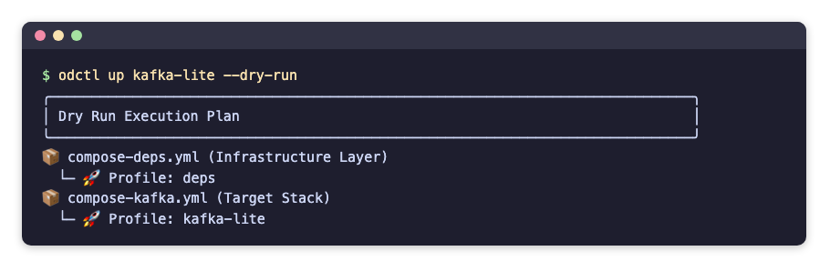

Getting Started
This page installs odctl, starts a first profile, runs each command on it and stops it. It needs no earlier page. The recording shows the main steps: install odctl, preview a profile, start it, list the containers and stop them.
Requirements
- Docker Engine or Docker Desktop, running. Give Docker 8 to 16 GB of memory.
- Python 3.10 or later.
Install
odctl is a command-line tool, so install it into its own environment with uv or pipx:
pip install odctl also works. odctl --help then lists the commands.
Create a Workspace
Run this in the folder of your project:
| docs/snippets/getting-started/commands.sh:init | |
|---|---|
It prints Workspace initialized! with the path of the new folder. The command copies the compose files and their settings into .odctl in the current directory, and writes .odctl/.env with TAG set to the CLI version. odctl reads from .odctl whenever it exists, so you can edit any file there. Workspace explains what changes with and without it, and how to customise it.
Start a Profile
A profile is a named group of services that start together. This lists every profile, with its parent stack and a description:
| docs/snippets/getting-started/commands.sh:list | |
|---|---|
Add -d to list each profile's services and host ports as well:
| docs/snippets/getting-started/commands.sh:list-details | |
|---|---|
Add --json to print the profiles as JSON, which a script or an AI assistant reads more easily than a table. odctl prints the JSON on standard output and every warning on standard error, so a pipe receives only the JSON. The warning for a stale workspace is one example. The full output is an array with one object for each profile, and this keeps only kafka-lite:
| docs/snippets/getting-started/commands.sh:list-json | |
|---|---|
Each profile is one object, and starts lists the profiles that odctl up kafka-lite starts. JSON Output lists the keys of every command that takes --json.
This shows what one profile runs:
| docs/snippets/getting-started/commands.sh:explain | |
|---|---|
It prints a panel for kafka-lite: the parent stack kafka, the compose file, the profile it requires (deps), the containers connect, kafka, kafka-ui and karapace with their images, the host ports and how to reach each service.
--json prints the same details as one object, with usage, role and volumes added to the keys of list. usage is text for people to read, not a value to parse:
| docs/snippets/getting-started/commands.sh:explain-json | |
|---|---|
This shows the profiles kafka-lite would start, in order, without starting anything:
| docs/snippets/getting-started/commands.sh:dry-run | |
|---|---|
The dry run prints which compose files and profiles it would start:

Start it:
| docs/snippets/getting-started/commands.sh:up | |
|---|---|
odctl starts the profiles kafka-lite depends on first, then Kafka. It waits until the services are running, and healthy where they define a health check, then prints All requested profiles successfully started!. The Messaging page lists the same addresses as odctl explain.
See What Is Running
This prints the installed CLI version and whether Docker is reachable:
| docs/snippets/getting-started/commands.sh:info | |
|---|---|
The output has a title line, Open Data Stack (ODCTL), then CLI Version: with the version and Docker Daemon: ✅ Reachable. With --json, it also prints the image tag, the workspace and odctl's own images, and whether each image is already on your machine. workspace.path is the .odctl folder in the folder where you run odctl; the output below shortens it to /home/you/project/.odctl:
| docs/snippets/getting-started/commands.sh:info-json | |
|---|---|
stale_tag is null unless the workspace's TAG differs from the CLI version and no TAG is set in the shell; then it shows the workspace's TAG.
This lists the containers of a profile, with their state, health and ports:
| docs/snippets/getting-started/commands.sh:ps | |
|---|---|
It prints the active profiles, then a table with one row per container:
A dash under Health means the service has no health check.
--json prints the same containers as one object. Like the table, it needs profile names or --all. Each published port gives its host and container port as numbers, and a missing health check is null. active_profiles lists the profiles you named whose services are all running, with their prerequisites from the same compose file. It never holds deps, and it leaves out a profile whose services all belong to another listed profile, such as spark-lite beside spark-full:
| docs/snippets/getting-started/commands.sh:ps-json | |
|---|---|
This lists every container odctl manages, from every profile, including one-shot containers that have finished, such as odctl-init-deps:
| docs/snippets/getting-started/commands.sh:ps-all | |
|---|---|
This prints the last three log lines of one service, connect:
| docs/snippets/getting-started/commands.sh:logs | |
|---|---|
Each line starts with the service name, such as connect | [2026-10-24 05:14:03,065] INFO [Worker clientId=connect-connect:8083, .... Leave out -s connect to read every service of the profile, and add -f to follow the logs until you press Ctrl+C. This prints the last two lines written between ten minutes and one second ago, each with a timestamp before it:
| docs/snippets/getting-started/commands.sh:logs-time | |
|---|---|
--since and --until each take a time such as 2026-10-24T05:00:00 or a duration before now such as 10m.
Restart a Profile
This restarts the profile's containers and keeps them, with their data:
| docs/snippets/getting-started/commands.sh:restart | |
|---|---|
It prints Restarting containers... and Restart complete. A restart does not apply an edit to a compose file or .env. odctl recreate replaces the containers to apply one, as Apply a Change explains with examples. odctl pull downloads a profile's images before you start it, as Which Images Run shows.
Stop a Profile
This prints what odctl down would stop, without stopping anything:
| docs/snippets/getting-started/commands.sh:down-dry-run | |
|---|---|
With --volumes, the dry run also lists the named volumes that odctl down --volumes would remove, and adds a line for each container it stops that has unnamed volumes, with their number:
| docs/snippets/getting-started/commands.sh:down-volumes-dry-run | |
|---|---|
kafka-lite has no named volume of its own, and no other profile has a container, so the only named volume listed is the shared jar volume odctl-shared-deps. The dry run reads each container's volumes from Docker, so connect and kafka show their three unnamed volumes each, and a container with none, such as karapace, gets no line. Without Docker the dry run cannot count them, and says so. odctl down --volumes removes the shared jar volume with the last profile, and the unnamed volumes with their containers, as Where Data Lives explains.
This stops the profile and removes its containers:
| docs/snippets/getting-started/commands.sh:down | |
|---|---|
It prints Teardown complete. The data inside the containers goes with them, as Where Data Lives explains. It leaves the profiles that kafka-lite depends on in place, as Which Containers a Command Touches explains. This stops every profile and also removes the named volumes, such as the shared jar volume odctl-shared-deps. It asks Are you sure? first, and stops only after you answer y:
| docs/snippets/getting-started/commands.sh:down-all | |
|---|---|
In a script, --yes answers the prompt:
| docs/snippets/getting-started/commands.sh:down-all-yes | |
|---|---|
Code in the Guides
Every command and file in these pages is kept in the repository under docs/snippets, one folder per page, and the end-to-end tests run it on every release. A code block whose title names a file is a copy of that file, or of the section after the colon. The links on the published site point at the release that the docs describe.
Use It with an AI Assistant
The docs site publishes llms.txt, an index of these pages for AI assistants, and llms-full.txt with every page in one file. The repository also has an odctl skill in skills/odctl/SKILL.md, generated from the profiles, which tells an assistant which profile to start and how to reach each service. For Claude Code, copy the skills/odctl folder into ~/.claude/skills/. With the mcp extra, odctl mcp gives an MCP client odctl's commands as tools, as MCP Server sets up.